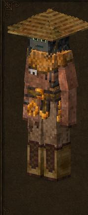
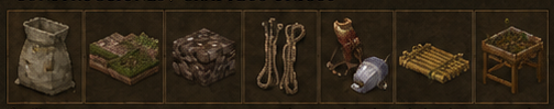

Agricultor
Farmhand · código oficial
farmhand · ficha 06/16
Rasgos: 9
Bonus: 17
Malus: 5
Recetas: 71

Resumen humano
base alimentaria del servidor. Muy fuerte en cultivos/semillas; malo para minería.
Esta línea es interpretación funcional breve; lo importante son los números y recetas de abajo.
Bonus objetivos
- ahorro de durabilidad de azada: **+75%** (valor interno `0.75`)
- ahorro de durabilidad de caña de pescar: **+75%** (valor interno `0.75`)
- ahorro de durabilidad de guadaña: **+75%** (valor interno `0.75`)
- daño causado global: **+10%** (valor interno `0.1`)
- daño recibido global: **-10%** (valor interno `-0.1`)
- drop de cosecha cultivada: **+50%** (valor interno `0.5`)
- drop de cultivos silvestres: **+100%** (valor interno `1`)
- drop de semillas cultivadas: **+100%** (valor interno `1`)
- permanencia del fertilizante: **+25%** (valor interno `0.25`)
- probabilidad de estacas de bambú desde hojas: **+5%** (valor interno `0.05`)
- probabilidad de lianas desde hojas: **+5%** (valor interno `0.05`)
- probabilidad de restos vegetales desde hierba: **+10%** (valor interno `0.1`)
- probabilidad de semilla en cultivos jóvenes: **+100%** (valor interno `1`)
- velocidad al caminar: **+5%** (valor interno `0.05`)
- velocidad con plantas: **+100%** (valor interno `1`)
- velocidad con tierra: **+100%** (valor interno `1`)
- velocidad nadando: **+50%** (valor interno `0.5`)
Malus objetivos
- drop de mineral: **-10%** (valor interno `-0.1`)
- estabilidad temporal en interiores: **-20%** (valor interno `-0.2`)
- pérdida de estabilidad temporal: **+25%** (valor interno `0.25`)
- velocidad al picar mineral: **-10%** (valor interno `-0.1`)
- velocidad al picar piedra: **-10%** (valor interno `-0.1`)
Rasgos oficiales y efectos reales
| Rasgo | Tipo | Datos objetivos |
|---|---|---|
Miliciamilitia | positivo | velocidad al caminar: +5% (interno 0.05)daño recibido global: -10% (interno -0.1)daño causado global: +10% (interno 0.1) |
Agricultorfarmhand | positivo | sin atributos numéricos en traits.json; desbloqueo/rasgo de receta |
Pescadorfisherman | positivo | velocidad nadando: +50% (interno 0.5)ahorro de durabilidad de caña de pescar: +75% (interno 0.75) |
Cosechadorharvester | positivo | drop de cosecha cultivada: +50% (interno 0.5)drop de semillas cultivadas: +100% (interno 1)drop de cultivos silvestres: +100% (interno 1)probabilidad de semilla en cultivos jóvenes: +100% (interno 1) |
Carpintero Navalshipwright | positivo | probabilidad de estacas de bambú desde hojas: +5% (interno 0.05)probabilidad de lianas desde hojas: +5% (interno 0.05) |
Cultivadortiller | positivo | velocidad con tierra: +100% (interno 1)velocidad con plantas: +100% (interno 1)ahorro de durabilidad de azada: +75% (interno 0.75)ahorro de durabilidad de guadaña: +75% (interno 0.75) |
Fertilizadorfertilizer | positivo | permanencia del fertilizante: +25% (interno 0.25)probabilidad de restos vegetales desde hierba: +10% (interno 0.1) |
Delicadodelicate | negativo | drop de mineral: -10% (interno -0.1)velocidad al picar mineral: -10% (interno -0.1)velocidad al picar piedra: -10% (interno -0.1)pérdida de estabilidad temporal: +25% (interno 0.25) |
Sensible al solsunkissed | negativo | estabilidad temporal en interiores: -20% (interno -0.2) |
Recetas / desbloqueos
51mesa normal
10estación
10compatibilidad
71salidas listadas
Categorías detectadas
Cuerdas y cordajes: 17Cebos olorosos: 10Tejados y piezas de cubierta: 7Tailor's Delight: cuerdas: 7Mesa de germinación: 6Putrefacción y compostaje: 5Fertilizantes: 4Tierra y sustratos: 4Cuba de mezclas y alquimia: 4Balsas y embarcaciones simples: 2Raíces: 2Food Shelves: almacenamiento agrícola: 1Primitive Survival: pesca: 1Primitive Survival: lombrices: 1
Ver salidas exactas de recetas de esta clase (71)
| Modo | Categoría legible | Resultado legible | Nombre ES |
|---|---|---|---|
| mesa de crafteo normal | Fertilizantes | Potash ×4 | — |
| mesa de crafteo normal | Fertilizantes | Bonemeal ×2 | — |
| mesa de crafteo normal | Fertilizantes | Powder charcoal ×2 | — |
| mesa de crafteo normal | Fertilizantes | Compost ×2 | — |
| mesa de crafteo normal | Balsas y embarcaciones simples | Boat Balsas y embarcaciones simples bamboo angler ×1 | — |
| mesa de crafteo normal | Balsas y embarcaciones simples | Oar bamboo ×1 | — |
| mesa de crafteo normal | Tejados y piezas de cubierta | Tejado inclinado bamboo este libre ×8 | — |
| mesa de crafteo normal | Tejados y piezas de cubierta | Cumbrera de tejado bamboo norte-sur libre ×8 | — |
| mesa de crafteo normal | Tejados y piezas de cubierta | Punta de tejado bamboo libre ×1 | — |
| mesa de crafteo normal | Tejados y piezas de cubierta | Esquina interior de tejado bamboo este libre ×8 | — |
| mesa de crafteo normal | Tejados y piezas de cubierta | Esquina exterior de tejado bamboo este libre ×8 | — |
| mesa de crafteo normal | Tejados y piezas de cubierta | Beam ridge bamboo libre ×16 | — |
| mesa de crafteo normal | Tejados y piezas de cubierta | Beam plane bamboo libre ×16 | — |
| mesa de crafteo normal | Raíces | Cattailroot ×1 | — |
| mesa de crafteo normal | Raíces | Papyrusroot ×1 | — |
| mesa de crafteo normal | Cuerdas y cordajes | Supportrope one nuevo ×32 | — |
| mesa de crafteo normal | Cuerdas y cordajes | Supportrope doble nuevo ×32 | — |
| mesa de crafteo normal | Cuerdas y cordajes | Supportrope three nuevo ×32 | — |
| mesa de crafteo normal | Cuerdas y cordajes | Supportrope one old ×32 | — |
| mesa de crafteo normal | Cuerdas y cordajes | Supportrope doble old ×32 | — |
| mesa de crafteo normal | Cuerdas y cordajes | Supportrope three old ×32 | — |
| mesa de crafteo normal | Cuerdas y cordajes | Rope ×1 | — |
| mesa de crafteo normal | Cuerdas y cordajes | Rope ×16 | — |
| mesa de crafteo normal | Cuerdas y cordajes | Ladder rope norte ×6 | — |
| mesa de crafteo normal | Cuerdas y cordajes | Boat Balsas y embarcaciones simples Madera y carpintería ×1 | — |
| mesa de crafteo normal | Cuerdas y cordajes | Boat Balsas y embarcaciones simples Madera y carpintería ×1 | — |
| mesa de crafteo normal | Cuerdas y cordajes | Boat Balsas y embarcaciones simples bamboo ×1 | — |
| mesa de crafteo normal | Cuerdas y cordajes | Ratlines ×2 | — |
| mesa de crafteo normal | Cuerdas y cordajes | Figurehead eidolon ×1 | — |
| mesa de crafteo normal | Cuerdas y cordajes | Figurehead erel ×1 | — |
| mesa de crafteo normal | Cuerdas y cordajes | Figurehead seamonster ×1 | — |
| mesa de crafteo normal | Cuerdas y cordajes | Figurehead thunderlord ×1 | — |
| mesa de crafteo normal | Putrefacción y compostaje | Rot ×2 | — |
| mesa de crafteo normal | Putrefacción y compostaje | Rot ×2 | — |
| mesa de crafteo normal | Putrefacción y compostaje | Rot ×2 | — |
| mesa de crafteo normal | Putrefacción y compostaje | Rot ×2 | — |
| mesa de crafteo normal | Putrefacción y compostaje | Rot ×2 | — |
| mesa de crafteo normal | Tierra y sustratos | Soil low none ×64 | — |
| mesa de crafteo normal | Tierra y sustratos | Soil medium none ×16 | — |
| mesa de crafteo normal | Tierra y sustratos | Soil compost none ×4 | — |
| mesa de crafteo normal | Tierra y sustratos | Soil high none ×1 | — |
| mesa de crafteo normal | Cebos olorosos | Fishingbait dough ×6 | — |
| mesa de crafteo normal | Cebos olorosos | Fishingbait dough ×6 | — |
| mesa de crafteo normal | Cebos olorosos | Fishingbait redmeat ×8 | — |
| mesa de crafteo normal | Cebos olorosos | Fishingbait redmeat ×8 | — |
| mesa de crafteo normal | Cebos olorosos | Fishingbait bushmeat ×6 | — |
| mesa de crafteo normal | Cebos olorosos | Fishingbait bushmeat ×6 | — |
| mesa de crafteo normal | Cebos olorosos | Fishingbait fishmeat ×6 | — |
| mesa de crafteo normal | Cebos olorosos | Fishingbait fishmeat ×6 | — |
| mesa de crafteo normal | Cebos olorosos | Fishingbait poultry ×8 | — |
| mesa de crafteo normal | Cebos olorosos | Fishingbait poultry ×8 | — |
| estación especial | Cuba de mezclas y alquimia | Potash ×4 | — |
| estación especial | Cuba de mezclas y alquimia | Bonemeal ×2 | — |
| estación especial | Cuba de mezclas y alquimia | Powder charcoal ×2 | — |
| estación especial | Cuba de mezclas y alquimia | Compost ×3 | — |
| estación especial | Mesa de germinación | Seeds grain ×1 | — |
| estación especial | Mesa de germinación | Seeds vegetable ×1 | — |
| estación especial | Mesa de germinación | Seeds cassava ×1 | — |
| estación especial | Mesa de germinación | Seeds licorice ×1 | — |
| estación especial | Mesa de germinación | Seeds fruit ×1 | — |
| estación especial | Mesa de germinación | Seeds legume ×1 | — |
| receta de compatibilidad | Food Shelves: almacenamiento agrícola | Floursack normal este ×1 | — |
| receta de compatibilidad | Primitive Survival: pesca | Fishbasket norte ×1 | — |
| receta de compatibilidad | Primitive Survival: lombrices | Earthwormcastings ×1 | — |
| receta de compatibilidad | Tailor's Delight: cuerdas | Supportrope one nuevo ×32 | — |
| receta de compatibilidad | Tailor's Delight: cuerdas | Supportrope doble nuevo ×32 | — |
| receta de compatibilidad | Tailor's Delight: cuerdas | Supportrope three nuevo ×32 | — |
| receta de compatibilidad | Tailor's Delight: cuerdas | Rope ×1 | — |
| receta de compatibilidad | Tailor's Delight: cuerdas | Rope ×16 | — |
| receta de compatibilidad | Tailor's Delight: cuerdas | Ladder rope norte ×6 | — |
| receta de compatibilidad | Tailor's Delight: cuerdas | Ratlines ×2 | — |
Archivos de esta ficha
Las exportaciones PNG/MD se generan desde la ficha dinámica actual.